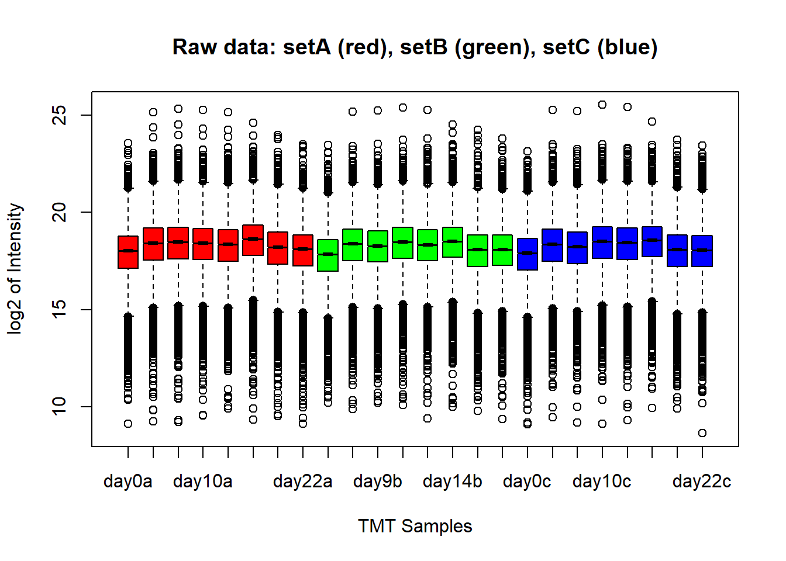
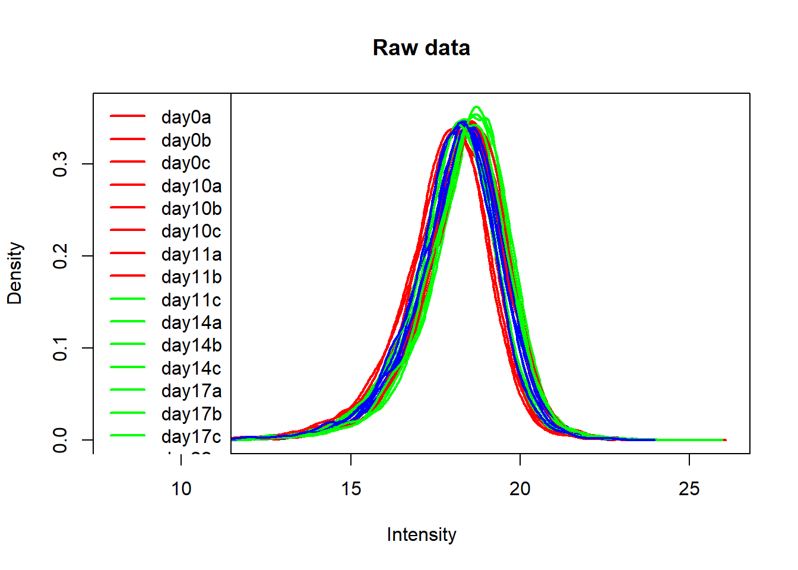
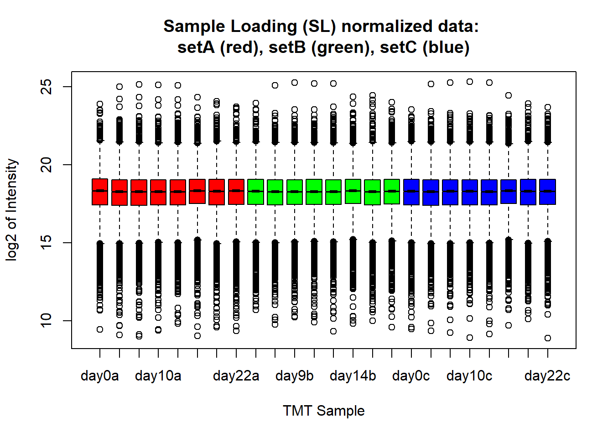
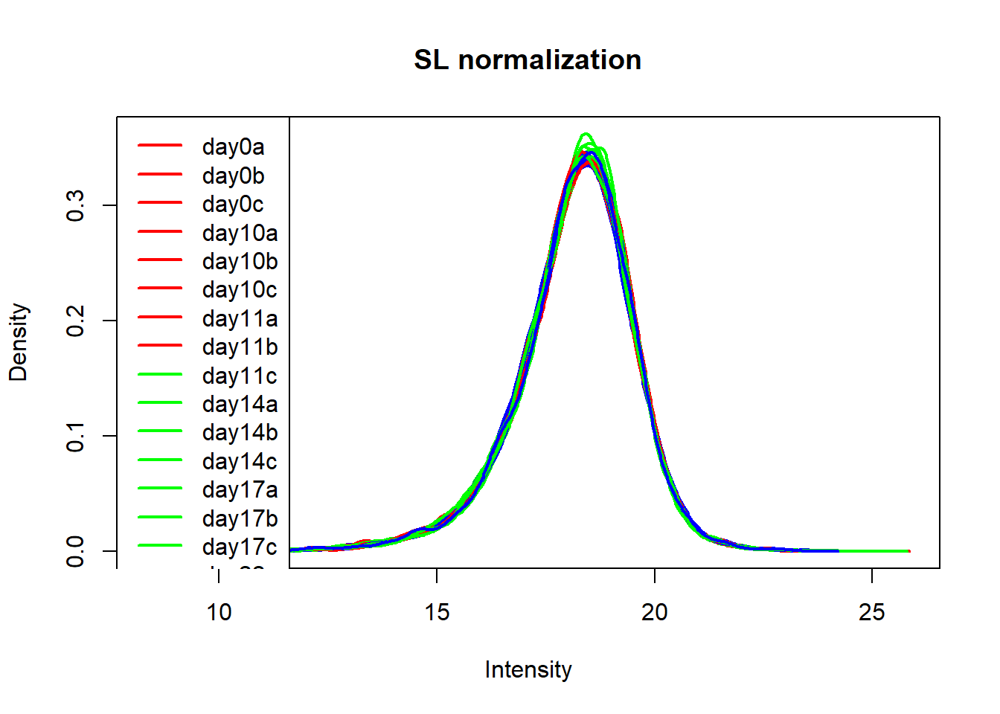
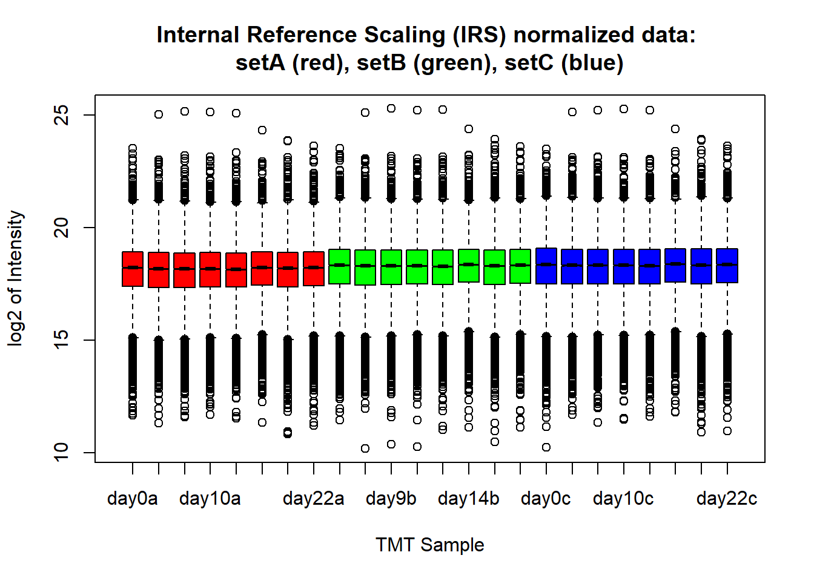
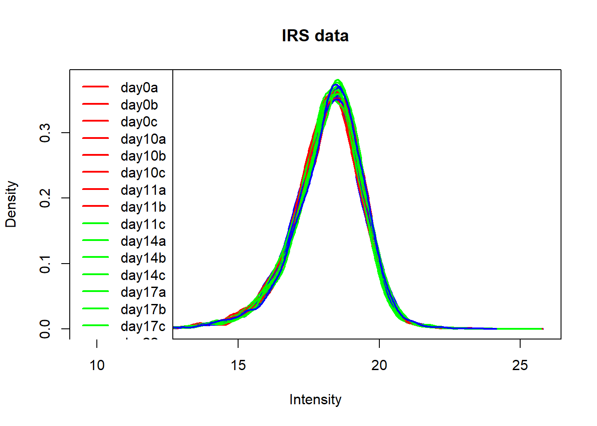
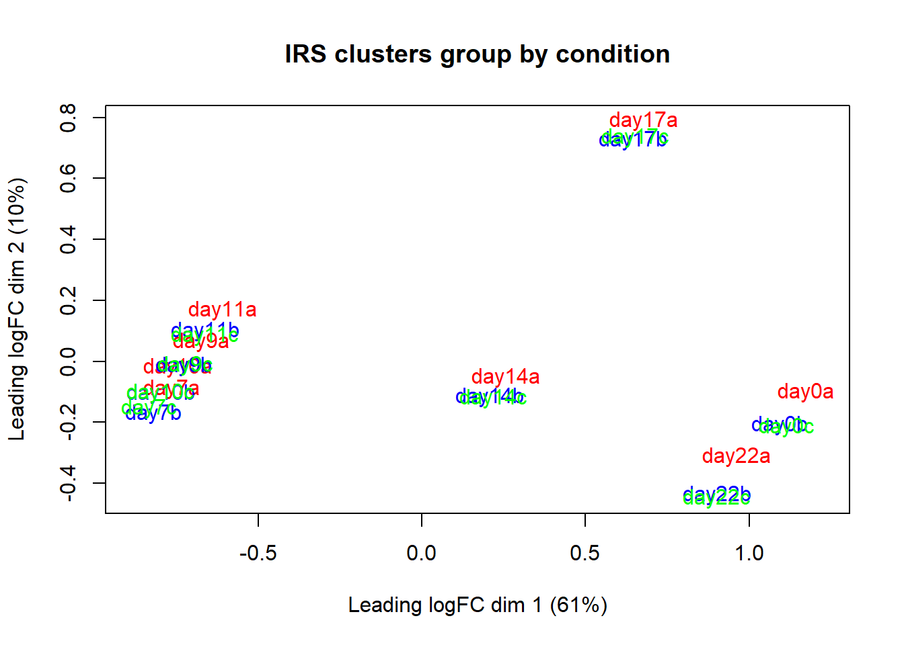

##########################################################################################
library('tidyverse')
library('limma')
library('RColorBrewer')
library('DESeq2')
library('DEqMS')
library('ggrepel')sorensenTimecourseProtein
Setting up the environment
These are packages you will need for this notebook. For exact versions used, please refer to the session info at the bottom of this notebook.
I want to set a base directory that we can use as a link to the directory where we will do most of the work. I use two directories here because the Workspace is what is pushed to GitHub and contains scripts and plot files, but the Repository is where more of the big data is stored that does not get pushed.
##########################################################################################
generalDatasets = 'C:/Users/chughes/Documents/bccrc/projectsRepository/generalDatasets'
baseWorkspace = 'C:/Users/chughes/Documents/bccrc/projectsWorkspace/sorensenLab/relatedToDlg2'
baseRepository = 'C:/Users/chughes/Documents/bccrc/projectsRepository/sorensenLab/relatedToDlg2'Data processing
Read in the peptide spectral match data. The TMT layout is as follows:
126 pool 127N empty 127C empty 128N day0 128C day7 129N day9 129C day10 130N day11 130C day14 131N day17 131C day22 132N empty 132C empty 133N pool 133C empty 134N empty
##########################################################################################
##set the file locations
sampleInfo = c('setA','setB','setC')
annotation = c('a','b','c')
psmFiles = file.path(baseRepository, 'database20220929_ewsExpressionDatabase/sorensenTimecourseProtein/fragpipeAnalysis', sampleInfo, 'psm.tsv')
all(file.exists(psmFiles))[1] TRUE##process the identification data
psmData = tibble()
for (i in 1:length(sampleInfo)){
psmTemp = read_tsv(psmFiles[i], show_col_types = FALSE) %>%
dplyr::select(Peptide, `Protein ID`, Gene, Spectrum) %>%
dplyr::rename(sequence = Peptide,
accession = `Protein ID`,
symbol = Gene) %>%
dplyr::mutate(dataset = tolower(sampleInfo[i]),
scan = as.numeric(sub('.*_HpH_[0-9]+\\.(.*)\\.[0-9]+\\.[0-9]+', '\\1', Spectrum)),
fraction = sub('.*_HpH_(.*)\\.[0-9]+\\.[0-9]+\\.[0-9]+', '\\1', Spectrum)) %>%
dplyr::select(-Spectrum)
##
psmData = rbind(psmData, psmTemp)
}
psmData# A tibble: 556,568 x 6
sequence accession symbol dataset scan fraction
<chr> <chr> <chr> <chr> <dbl> <chr>
1 ALVELNGVSLIPK Q9UHL9 GTF2IRD1 seta 2633 1
2 THQQQHQAAVR Q6ZN55 ZNF574 seta 2730 1
3 MNTNPSR P40429 RPL13A seta 2766 1
4 AHATGAGPAGR Q9Y490 TLN1 seta 3081 1
5 VTSTQQQTR P49023 PXN seta 3105 1
6 NVSSATHSAR Q9UPN4 CEP131 seta 3109 1
7 TIEAHSR Q16555 DPYSL2 seta 3114 1
8 RAEATAASTSR O95721 SNAP29 seta 3118 1
9 SGGGGHGSSR O00571 DDX3X seta 3124 1
10 RSTITSR Q99880 H2BC13 seta 3136 1
# ... with 556,558 more rows##this is the function we will use to process the quant data
combineQuantFiles = function(filePath, ...){
quantData = read_tsv(filePath, show_col_types = FALSE) %>%
dplyr::select(MS2ScanNumber, `126Intensity`:`134NIntensity`)
colnames(quantData) = c('scan','tmt126C','tmt127N','tmt127C','tmt128N','tmt128C','tmt129N',
'tmt129C','tmt130N','tmt130C','tmt131N','tmt131C','tmt132N','tmt132C','tmt133N','tmt133C','tmt134N')
##
fraction = sub('.*_HpH_(.*)\\.raw_Matrix\\.txt', '\\1', filePath)
dataset = sub('.*ch20201223_A673ShEwsFli1DoxTimecourse(.*)_TMT16_HpH_[0-9]+\\.raw_Matrix\\.txt', '\\1', filePath)
quantData$fraction = fraction
quantData$dataset = tolower(dataset)
##
return(quantData)
}
##process the quant data
quantFiles = list.files(paste(baseRepository, '/database20220929_ewsExpressionDatabase/sorensenTimecourseProtein/quants/', sep = ''),
pattern = '_Matrix.txt', full.names = TRUE)
quantDataSet = lapply(quantFiles, combineQuantFiles)New names:
New names:
New names:
New names:
New names:
New names:
New names:
New names:
New names:
New names:
New names:
New names:
New names:
New names:
New names:
New names:
New names:
New names:
New names:
New names:
New names:
New names:
New names:
New names:
New names:
New names:
New names:
New names:
New names:
New names:
New names:
New names:
New names:
New names:
New names:
New names:
New names:
New names:
New names:
New names:
New names:
New names:
New names:
New names:
New names:
New names:
New names:
New names:
New names:
New names:
New names:
New names:
New names:
New names:
New names:
New names:
New names:
New names:
New names:
New names:
New names:
New names:
New names:
New names:
New names:
New names:
New names:
New names:
New names:
New names:
New names:
New names:
New names:
New names:
New names:
New names:
New names:
New names:
New names:
New names:
New names:
New names:
New names:
New names:
New names:
New names:
New names:
New names:
New names:
New names:
New names:
New names:
New names:
New names:
New names:
New names:
New names:
New names:
New names:
New names:
New names:
New names:
New names:
New names:
New names:
New names:
New names:
New names:
* `` -> `...140`allQuantData = do.call('rbind', quantDataSet)
##combine all of the data
psmQuant = psmData %>%
left_join(allQuantData)Joining, by = c("dataset", "scan", "fraction")##filter the psm data
psmQuant = psmQuant %>%
dplyr::select(-tmt127N, -tmt127C, -tmt132N, -tmt132C, -tmt133C, -tmt134N) %>%
dplyr::filter(!is.na(tmt126C)) %>%
dplyr::rowwise() %>%
dplyr::mutate(sampleSignal = sum(tmt128N:tmt131C, na.rm = TRUE)) %>%
dplyr::filter(sampleSignal >= 800)
##roll into proteins
pro = psmQuant %>%
dplyr::ungroup() %>%
dplyr::select(-sampleSignal) %>%
dplyr::mutate(psmCount = 1) %>%
dplyr::group_by(sequence, accession, symbol, dataset) %>%
dplyr::summarise(across(tmt126C:tmt133N, mean, na.rm = TRUE), psmCount = sum(psmCount, na.rm = TRUE)) %>%
dplyr::mutate(pepCount = 1) %>%
dplyr::group_by(dataset, accession, symbol) %>%
dplyr::summarise(across(tmt126C:tmt133N, median, na.rm = TRUE), psmCount = sum(psmCount, na.rm = TRUE), pepCount = sum(pepCount, na.rm = TRUE))`summarise()` has grouped output by 'sequence', 'accession', 'symbol'. You can
override using the `.groups` argument.
`summarise()` has grouped output by 'dataset', 'accession'. You can override
using the `.groups` argument.##save the data
saveRDS(pro[pro$dataset == 'seta',], paste(baseRepository, '/database20220929_ewsExpressionDatabase/sorensenTimecourseProtein/dataset_rawProteinDatasetA.rds', sep = ''))
saveRDS(pro[pro$dataset == 'setb',], paste(baseRepository, '/database20220929_ewsExpressionDatabase/sorensenTimecourseProtein/dataset_rawProteinDatasetB.rds', sep = ''))
saveRDS(pro[pro$dataset == 'setc',], paste(baseRepository, '/database20220929_ewsExpressionDatabase/sorensenTimecourseProtein/dataset_rawProteinDatasetC.rds', sep = ''))Perform the IRS normalization.
##########################################################################################
proteinSet1 = readRDS(paste(baseRepository, '/database20220929_ewsExpressionDatabase/sorensenTimecourseProtein/dataset_rawProteinDatasetA.rds', sep = '')) %>%
dplyr::ungroup() %>%
dplyr::select(-dataset) %>%
dplyr::rename(pool1a = tmt126C,
day0a = tmt128N,
day7a = tmt128C,
day9a = tmt129N,
day10a = tmt129C,
day11a = tmt130N,
day14a = tmt130C,
day17a = tmt131N,
day22a = tmt131C,
pool2a = tmt133N,
psma = psmCount,
pepa = pepCount)
proteinSet2 = readRDS(paste(baseRepository, '/database20220929_ewsExpressionDatabase/sorensenTimecourseProtein/dataset_rawProteinDatasetB.rds', sep = '')) %>%
dplyr::ungroup() %>%
dplyr::select(-dataset) %>%
dplyr::rename(pool1b = tmt126C,
day0b = tmt128N,
day7b = tmt128C,
day9b = tmt129N,
day10b = tmt129C,
day11b = tmt130N,
day14b = tmt130C,
day17b = tmt131N,
day22b = tmt131C,
pool2b = tmt133N,
psmb = psmCount,
pepb = pepCount)
proteinSet3 = readRDS(paste(baseRepository, '/database20220929_ewsExpressionDatabase/sorensenTimecourseProtein/dataset_rawProteinDatasetC.rds', sep = '')) %>%
dplyr::ungroup() %>%
dplyr::select(-dataset) %>%
dplyr::rename(pool1c = tmt126C,
day0c = tmt128N,
day7c = tmt128C,
day9c = tmt129N,
day10c = tmt129C,
day11c = tmt130N,
day14c = tmt130C,
day17c = tmt131N,
day22c = tmt131C,
pool2c = tmt133N,
psmc = psmCount,
pepc = pepCount)
proteinSet = proteinSet1 %>%
full_join(proteinSet2) %>%
full_join(proteinSet3)Joining, by = c("accession", "symbol")
Joining, by = c("accession", "symbol")##raw data check
targetSamples = proteinSet[,c(1:2, which(grepl('day', colnames(proteinSet))))]
pooledSamples = proteinSet[,c(which(grepl('pool', colnames(proteinSet))))]
psmSamples = proteinSet[,c(which(grepl('psm', colnames(proteinSet))))]
rawData = cbind(targetSamples, pooledSamples, psmSamples)
rawData[rawData == 0] = NA
rawData = subset(rawData, rowSums(is.na(rawData[,3:10])) < 5 & rowSums(is.na(rawData[,11:18])) < 5 & rowSums(is.na(rawData[,19:26])) < 5)
boxplot(log2(rawData[,3:26]), col = rep(rep(c('red', 'green', 'blue'), each = 8), 3),
notch = TRUE, main = 'Raw data: setA (red), setB (green), setC (blue)',
xlab = 'TMT Samples', ylab = 'log2 of Intensity')
plotDensities(log2(rawData[,3:26]), col = rep(rep(c('red', 'green', 'blue'), each = 8), 3),
main = 'Raw data')
format(round(colSums(rawData[,3:26], na.rm = TRUE), digits = 0), big.mark = ",") day0a day7a day9a day10a day11a
"2,853,291,059" "3,913,879,694" "4,078,081,420" "3,911,458,604" "3,745,926,025"
day14a day17a day22a day0b day7b
"4,310,315,919" "3,345,905,539" "3,038,166,684" "2,554,868,913" "3,792,748,748"
day9b day10b day11b day14b day17b
"3,525,406,123" "4,025,521,297" "3,694,785,048" "3,980,939,597" "3,059,323,130"
day22b day0c day7c day9c day10c
"3,043,709,797" "2,684,858,168" "3,756,976,389" "3,387,812,695" "4,113,817,256"
day11c day14c day17c day22c
"3,930,597,875" "4,117,644,534" "3,064,272,437" "2,985,682,568" ##sample loading normalization
exp1Raw = rawData[c(3:10)]
exp2Raw = rawData[c(11:18)]
exp3Raw = rawData[c(19:26)]
target = mean(c(colSums(exp1Raw, na.rm = TRUE), colSums(exp2Raw, na.rm = TRUE), colSums(exp3Raw, na.rm = TRUE)))
normFacs = target / colSums(exp1Raw, na.rm = TRUE)
exp1Sl = sweep(exp1Raw, 2, normFacs, FUN = "*")
normFacs = target / colSums(exp2Raw, na.rm = TRUE)
exp2Sl = sweep(exp2Raw, 2, normFacs, FUN = "*")
normFacs = target / colSums(exp3Raw, na.rm = TRUE)
exp3Sl = sweep(exp3Raw, 2, normFacs, FUN = "*")
dataSl = cbind(exp1Sl, exp2Sl, exp3Sl)
boxplot(log2(dataSl), col = rep(rep(c('red', 'green', 'blue'), each = 8), 3),
notch = TRUE, main = "Sample Loading (SL) normalized data: \nsetA (red), setB (green), setC (blue)",
xlab = 'TMT Sample', ylab = 'log2 of Intensity')
plotDensities(log2(dataSl), col = rep(rep(c('red', 'green', 'blue'), each = 8), 3), main = "SL normalization")
##IRS normalization
irs = tibble(rowSums(rawData[,27:28], na.rm = TRUE), rowSums(rawData[,29:30], na.rm = TRUE), rowSums(rawData[,31:32], na.rm = TRUE))
colnames(irs) = c('sum1','sum2','sum3')
irs$average = apply(irs, 1, function(x) exp(mean(log(x),na.rm = TRUE)))
irs$fac1 = irs$average / irs$sum1
irs$fac2 = irs$average / irs$sum2
irs$fac3 = irs$average / irs$sum3
dataIrs = exp1Sl * irs$fac1
dataIrs = cbind(dataIrs, exp2Sl * irs$fac2)
dataIrs = cbind(dataIrs, exp3Sl * irs$fac3)
boxplot(log2(dataIrs), col = rep(rep(c('red', 'green', 'blue'), each = 8), 3),
main = "Internal Reference Scaling (IRS) normalized data: \nsetA (red), setB (green), setC (blue)",
xlab = 'TMT Sample', ylab = 'log2 of Intensity', notch = TRUE)Warning in bplt(at[i], wid = width[i], stats = z$stats[, i], out = z$out[z$group
== : Outlier (-Inf) in boxplot 1 is not drawnWarning in bplt(at[i], wid = width[i], stats = z$stats[, i], out = z$out[z$group
== : Outlier (-Inf) in boxplot 2 is not drawnWarning in bplt(at[i], wid = width[i], stats = z$stats[, i], out = z$out[z$group
== : Outlier (-Inf) in boxplot 3 is not drawnWarning in bplt(at[i], wid = width[i], stats = z$stats[, i], out = z$out[z$group
== : Outlier (-Inf) in boxplot 4 is not drawnWarning in bplt(at[i], wid = width[i], stats = z$stats[, i], out = z$out[z$group
== : Outlier (-Inf) in boxplot 5 is not drawnWarning in bplt(at[i], wid = width[i], stats = z$stats[, i], out = z$out[z$group
== : Outlier (-Inf) in boxplot 6 is not drawnWarning in bplt(at[i], wid = width[i], stats = z$stats[, i], out = z$out[z$group
== : Outlier (-Inf) in boxplot 7 is not drawnWarning in bplt(at[i], wid = width[i], stats = z$stats[, i], out = z$out[z$group
== : Outlier (-Inf) in boxplot 8 is not drawnWarning in bplt(at[i], wid = width[i], stats = z$stats[, i], out = z$out[z$group
== : Outlier (-Inf) in boxplot 9 is not drawnWarning in bplt(at[i], wid = width[i], stats = z$stats[, i], out = z$out[z$group
== : Outlier (-Inf) in boxplot 10 is not drawnWarning in bplt(at[i], wid = width[i], stats = z$stats[, i], out = z$out[z$group
== : Outlier (-Inf) in boxplot 11 is not drawnWarning in bplt(at[i], wid = width[i], stats = z$stats[, i], out = z$out[z$group
== : Outlier (-Inf) in boxplot 12 is not drawnWarning in bplt(at[i], wid = width[i], stats = z$stats[, i], out = z$out[z$group
== : Outlier (-Inf) in boxplot 13 is not drawnWarning in bplt(at[i], wid = width[i], stats = z$stats[, i], out = z$out[z$group
== : Outlier (-Inf) in boxplot 14 is not drawnWarning in bplt(at[i], wid = width[i], stats = z$stats[, i], out = z$out[z$group
== : Outlier (-Inf) in boxplot 15 is not drawnWarning in bplt(at[i], wid = width[i], stats = z$stats[, i], out = z$out[z$group
== : Outlier (-Inf) in boxplot 16 is not drawnWarning in bplt(at[i], wid = width[i], stats = z$stats[, i], out = z$out[z$group
== : Outlier (-Inf) in boxplot 17 is not drawnWarning in bplt(at[i], wid = width[i], stats = z$stats[, i], out = z$out[z$group
== : Outlier (-Inf) in boxplot 18 is not drawnWarning in bplt(at[i], wid = width[i], stats = z$stats[, i], out = z$out[z$group
== : Outlier (-Inf) in boxplot 19 is not drawnWarning in bplt(at[i], wid = width[i], stats = z$stats[, i], out = z$out[z$group
== : Outlier (-Inf) in boxplot 20 is not drawnWarning in bplt(at[i], wid = width[i], stats = z$stats[, i], out = z$out[z$group
== : Outlier (-Inf) in boxplot 21 is not drawnWarning in bplt(at[i], wid = width[i], stats = z$stats[, i], out = z$out[z$group
== : Outlier (-Inf) in boxplot 22 is not drawnWarning in bplt(at[i], wid = width[i], stats = z$stats[, i], out = z$out[z$group
== : Outlier (-Inf) in boxplot 23 is not drawnWarning in bplt(at[i], wid = width[i], stats = z$stats[, i], out = z$out[z$group
== : Outlier (-Inf) in boxplot 24 is not drawn
plotDensities(log2(dataIrs), col = rep(rep(c('red', 'green', 'blue'), each = 8), 3), main = "IRS data")
format(round(colSums(dataIrs, na.rm = TRUE), digits = 0), big.mark = ",") day0a day7a day9a day10a day11a
"3,187,537,699" "3,157,426,181" "3,155,915,395" "3,157,857,771" "3,156,403,317"
day14a day17a day22a day0b day7b
"3,167,287,600" "3,179,849,397" "3,181,003,294" "3,430,261,772" "3,448,253,015"
day9b day10b day11b day14b day17b
"3,441,634,914" "3,442,722,692" "3,436,712,692" "3,430,313,458" "3,420,130,070"
day22b day0c day7c day9c day10c
"3,423,364,358" "3,506,479,020" "3,509,603,458" "3,511,761,343" "3,515,571,817"
day11c day14c day17c day22c
"3,516,885,032" "3,508,980,019" "3,508,105,245" "3,503,484,087" ##post-normalization clustering
colVec = c(rep('red',8),rep('blue',8),rep('green',8))
plotMDS(log2(dataIrs), col = colVec, main = "IRS clusters group by condition")
Recombine the data with the accessions and save the final file.
##########################################################################################
finalIrsData = as_tibble(cbind(rawData[,c(1:2,33:35)], dataIrs))
##save data
saveRDS(finalIrsData, paste(baseRepository, '/database20220929_ewsExpressionDatabase/sorensenTimecourseProtein/dataset_proteinSetABCIrsNormalized.rds', sep = ''))Perform a differential expression analysis using DEqMS between specific timepoints.
##########################################################################################
dataIrsRaw = as.data.frame(readRDS(paste(baseRepository, '/database20220929_ewsExpressionDatabase/sorensenTimecourseProtein/dataset_proteinSetABCIrsNormalized.rds', sep = '')))
row.names(dataIrsRaw) = dataIrsRaw$accession
dataIrs = dataIrsRaw[,c(which(grepl('day0', colnames(dataIrsRaw)) | grepl('day7', colnames(dataIrsRaw))))] #I only keep the two time points I want to compare here
dataIrsLog = log2(dataIrs)
dataIrsLog = na.omit(dataIrsLog)
##make the design table and fit the model
cond = as.factor(rep(c('day0','day7'),3))
design = model.matrix(~0+cond) # 0 means no intercept for the linear model
colnames(design) = gsub('cond','',colnames(design))
contrast = makeContrasts(contrasts = 'day0-day7', levels = design)
fit1 = lmFit(dataIrsLog, design)
fit2 = contrasts.fit(fit1,contrasts = contrast)
fit3 = eBayes(fit2)
##DEqMS analysis
count_columns = seq(3,5,1)
psm.count.table = data.frame(count = rowMins(as.matrix(dataIrsRaw[,count_columns])), row.names = dataIrsRaw$accession)
fit3$count = psm.count.table[rownames(fit3$coefficients),'count']
fit4 = spectraCounteBayes(fit3)Outputs of spectraCounteBayes:
- object is augmented form of fit object from eBayes in Limma, with the additions being:
- sca.t - Spectra Count Adjusted posterior t-value
- sca.p - Spectra Count Adjusted posterior p-value
- sca.dfprior - DEqMS estimated prior degrees of freedom
- sca.priorvar- DEqMS estimated prior variance
- sca.postvar - DEqMS estimated posterior variance
- model - fitted model
Output the results.
##########################################################################################
##extract the results
deqmsResults = tibble(outputResult(fit4, coef_col = 1)) %>%
dplyr::rename(accession = gene) %>%
left_join(dataIrsRaw[,c('accession','symbol')]) %>%
dplyr::select(symbol, logFC) %>%
dplyr::rename(sorensenTimecourseProtein = logFC)Joining, by = "accession"##write the data
saveRDS(deqmsResults, paste(baseRepository, '/database20220929_ewsExpressionDatabase/sorensenTimecourseProtein/dataset_sorensenTimecourseProtein.rds', sep = ''))
write.table(deqmsResults,
paste(baseRepository, '/database20220929_ewsExpressionDatabase/sorensenTimecourseProtein/dataset_sorensenTimecourseProtein.csv', sep = ''),
sep = ',', row.names = FALSE, quote = FALSE)Finish up.
Session info
##########################################################################################
sessionInfo()R version 4.1.3 (2022-03-10)
Platform: x86_64-w64-mingw32/x64 (64-bit)
Running under: Windows 10 x64 (build 19042)
Matrix products: default
locale:
[1] LC_COLLATE=English_Canada.1252 LC_CTYPE=English_Canada.1252
[3] LC_MONETARY=English_Canada.1252 LC_NUMERIC=C
[5] LC_TIME=English_Canada.1252
attached base packages:
[1] stats4 stats graphics grDevices utils datasets methods
[8] base
other attached packages:
[1] ggrepel_0.9.2 DEqMS_1.12.1
[3] DESeq2_1.34.0 SummarizedExperiment_1.24.0
[5] Biobase_2.54.0 MatrixGenerics_1.6.0
[7] matrixStats_0.62.0 GenomicRanges_1.46.1
[9] GenomeInfoDb_1.30.1 IRanges_2.28.0
[11] S4Vectors_0.32.4 BiocGenerics_0.40.0
[13] RColorBrewer_1.1-3 limma_3.50.3
[15] forcats_0.5.2 stringr_1.4.1
[17] dplyr_1.0.10 purrr_0.3.5
[19] readr_2.1.3 tidyr_1.2.1
[21] tibble_3.1.8 ggplot2_3.4.0
[23] tidyverse_1.3.2
loaded via a namespace (and not attached):
[1] bitops_1.0-7 fs_1.5.2 bit64_4.0.5
[4] lubridate_1.9.0 httr_1.4.4 tools_4.1.3
[7] backports_1.4.1 utf8_1.2.2 R6_2.5.1
[10] DBI_1.1.3 colorspace_2.0-3 withr_2.5.0
[13] tidyselect_1.2.0 bit_4.0.5 compiler_4.1.3
[16] cli_3.4.1 rvest_1.0.3 xml2_1.3.3
[19] DelayedArray_0.20.0 scales_1.2.1 genefilter_1.76.0
[22] digest_0.6.30 rmarkdown_2.18 XVector_0.34.0
[25] pkgconfig_2.0.3 htmltools_0.5.3 dbplyr_2.2.1
[28] fastmap_1.1.0 htmlwidgets_1.5.4 rlang_1.0.6
[31] readxl_1.4.1 RSQLite_2.2.18 rstudioapi_0.14
[34] generics_0.1.3 jsonlite_1.8.3 vroom_1.6.0
[37] BiocParallel_1.28.3 googlesheets4_1.0.1 RCurl_1.98-1.9
[40] magrittr_2.0.3 GenomeInfoDbData_1.2.7 Matrix_1.5-3
[43] Rcpp_1.0.9 munsell_0.5.0 fansi_1.0.3
[46] lifecycle_1.0.3 stringi_1.7.8 yaml_2.3.6
[49] zlibbioc_1.40.0 blob_1.2.3 grid_4.1.3
[52] parallel_4.1.3 crayon_1.5.2 lattice_0.20-45
[55] splines_4.1.3 Biostrings_2.62.0 haven_2.5.1
[58] annotate_1.72.0 KEGGREST_1.34.0 hms_1.1.2
[61] locfit_1.5-9.6 knitr_1.40 pillar_1.8.1
[64] geneplotter_1.72.0 reprex_2.0.2 XML_3.99-0.12
[67] glue_1.6.2 evaluate_0.18 modelr_0.1.10
[70] png_0.1-7 vctrs_0.5.1 tzdb_0.3.0
[73] cellranger_1.1.0 gtable_0.3.1 assertthat_0.2.1
[76] cachem_1.0.6 xfun_0.34 xtable_1.8-4
[79] broom_1.0.1 survival_3.4-0 googledrive_2.0.0
[82] gargle_1.2.1 memoise_2.0.1 AnnotationDbi_1.56.2
[85] timechange_0.1.1 ellipsis_0.3.2